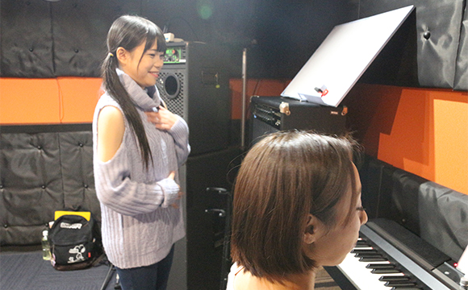
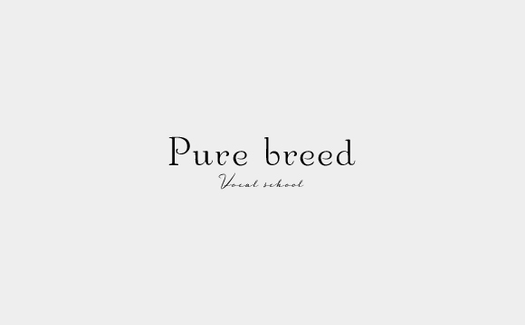
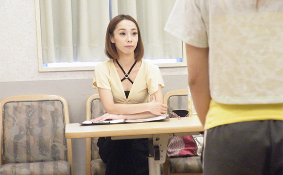
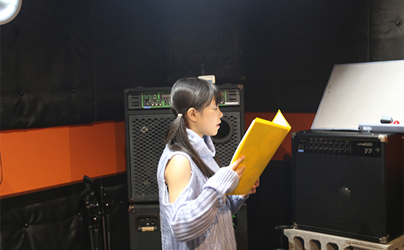

- TOP
- Pure breedの魅力・想い
Pure breed（ピュア ブリード）について
～魅力・生徒さんの声・コンセプト・行動指針～
福岡の「Vocal school Pure breed（ピュア ブリード）」では、ボイストレーナー・沖島ゆきが、福岡県田川郡・福岡市天神・北九州市の4つの教室で、本格的なボイストレーニングのレッスンを行っています。ここでは、当スクールの特徴や、受講された生徒さんの声、コンセプトや行動指針をご紹介します。
Pure breedの魅力
活動実績が豊富なボイストレーナー「沖島ゆき」によるマンツーマンレッスン
J-POPはじめ、R＆B・ROCK・reggae・演歌・classic・blues・gospel・JAZZなど幅広い音楽ジャンルをカバーする当スクール代表・沖島ゆきは、自身も高校生の時から福岡と東京を行き来し、ボイストレーニングに励んでまいりました。ラジオパーソナリティや各種音楽イベントへの出演、CMソングへの協力など、活動実績で培った経験と知識を活かし、これから歌でプロデビューを目指したい子たちを、ボイストレーニングでバックアップしています。また、レッスンはマンツーマンでしっかり生徒さんと向き合いますので、毎回着実な進歩を実感していただけます。
自分の目的や希望に合わせたレッスンが選べる
当スクールでは、プロの歌い手を目指す子だけでなく、気楽に趣味としてボイトレを受講したいという方のために、さまざまなコースをご用意しています。趣味でボイトレコースやプロ養成コース、ユニット・グループレッスンコース、ステージングコースなど、生徒さんの目的に合わせてコースをお選びいただけます。 無料体験レッスンやオンラインレッスンにも対応していますので、ぜひお気軽にお問い合わせください。

教室が4カ所あるから通いやすい場所を選べる
当スクールでは福岡県田川郡・福岡市天神・北九州市に4つの教室を持っており、オンラインレッスンにも対応しています。生徒さんのご都合のよいスタイルや、通いやすい教室をお選びいただけます。コースによっては場所が限定される場合もありますので、各種コース料金・タイムスケジュールをご確認いただき、お気軽にご相談ください。
明朗会計な料金プラン
当スクールは、入会金やお月謝（もしくは前払いチケット制）のみの明朗会計です。お申し込みいただいたプランについて、事前にお知らせする金額以上の費用は発生いたしません。年会費・イベント出演費・レコーディング費用は発生しませんので、安心して受講していただけます。イベント出演時の衣装などについては、都度、自己負担となりますので、あらかじめご了承ください。
Paypayでの支払いができるオンラインレッスン
2020年のコロナ禍による新生活に合わせて、オンラインレッスンにも対応いたしました。感染症の不安もなくボイストレーニングレッスンが受けられますし、遠隔地から通っていただいていた生徒さん、また、遠方で当スクールでの受講を諦めていらっしゃった方にもレッスンをご提供できます。レッスンはZOOMで行い、お支払いはPaypayで完了しますので、ご自宅からも手軽に沖島ゆきのレッスンを受けていただけます。なお、事情で発声が難しい環境の方にも、練習方法や音楽理論、オーディション関連のご相談などで対応させていただきます。
イベント参加機会が多く、オーディション情報も獲得できる
当スクール代表の「沖島ゆき」は、高校生のうちから福岡と東京を行き来し、その後はラジオパーソナリティやイベント司会、ピアニスト・モデル・ダンサーといった多才な活躍をしてきた経歴の持ち主です。現在も音楽業界とのコネクションがあり、イベント出演やオーディション参加のご相談をよくいただいています。希望者のなかには、年間30本以上のイベントに出演している方もいます。また、大手レコード会社からのスカウトや問い合わせが多いのも事実です。生徒さん本人の能力やタレント制、デビューへの気持ちや努力次第では、デビューも夢ではありません。
新型コロナウィルス感染予防対策を徹底
当スクールでは、生徒さんが安心してレッスンを受けられるよう、国の「新型コロナウイルス感染拡大予防ガイドライン」に準じ、3密の回避や手指消毒、検温など、新型コロナウイルス感染予防を徹底して行っています。大切なご家族や友人のためにも、生徒さんにも自主的に徹底して感染予防対策に取り組んでもらっています。くわしくはこちらをご覧ください。
生徒さんの声
Pure breed（ピュア ブリード）で、ボイストレーナー・沖島ゆきのレッスンを受けた生徒さんからの声をご紹介します。アンケートにご協力いただいた皆様、ありがとうございます。
※画像をクリックすると、画像を拡大してご覧いただけます。
|
|
 |
|
|
|
|
|


|
|
|
|
|
|
|
|
|
|
|
|
21歳 Eさん（女性・アルバイト）
小学生のときに、「歌手になりたい」と心に決めてから自分なりに歌を学んできました。でも、高音がかすれてしまう私の課題はなかなか改善されず、ボイストレーニングに通うことに。Pure breedで、改めて基礎からしっかりと学ぶことで課題を克服出来るようになりました。それ以外にも、歌うときにコツを意識することで、以前よりだいぶ自分の歌に自信を持てるようになりました。近い将来、必ずプロの歌手としてデビューして、人に感動を与えられる歌い手になります！
25歳 Kさん（男性・会社員）
バンドでのデビューを夢見て、高校のときからずっと歌ってきました。尊敬するボーカリストがボイトレで上手くなったっていう記事を読んで、自分も行くことに。自分は、上手く歌っているつもりでも下手に聞こえてしまうタイプのようで、最初は先生が言うようにできず、歌うのがつらいと思うこともありましたが、今は改めて「歌うってこんなに気持ちいいんだ！」と実感しています。スクールでは新しい発見がたくさんあり、そのすべてが自分の力になっていると感じています。コツをつかめば必ずスキルアップできます。続けていけば必ず力がつきます！
17歳 Tさん（女性・高校生）
きちんと段階を踏んでトレーニングできました。YUKI先生のアドバイスはとても分かりやすいので、毎回、自分で上手くなるのを感じながら楽しくレッスンできました。
36歳 Uさん（男性・会社員）
昔から歌が苦手で、カラオケに誘われてもできるだけ断っていました。しかし、仕事上の付き合いで断れないこともしばしばあり、その時だけはイヤイヤながら歌っていました。
これからもカラオケに行く機会はあり、音痴なままはイヤなのでカラオケ上達法を探している時にヴォーカルスクールさんのホームページを発見し、思い切ってボイストレーニングにチャレンジしました。
現在、6ヶ月ほど通ってますが、歌うコツが分かってきて人並みに歌えるようになりました。「カラオケで披露する」という目標がありますので、もっと上手くなっていきたいです。
21歳 Yさん（男性・大学生）
カラオケで高音が出ずに悩んでいましたが、Pure breedですっかり克服しました。歌える歌も増えたので、今はカラオケが楽しみで仕方ない！
さらにうまくなれるよう、これからも頑張って行きたいと思います。
沖島ゆきismとは？ ～Pure breedのコンセプト～
沖島ゆきには、ボイストレーニングを通じて生徒さんたちに伝えたい「ism（イズム）＝主義・主張」があります。ここでは、Pure breedのコンセプトでもある”沖島ゆきism“をご紹介します。
1. Pure breedで驚きと感動を！
Pure breedが大切にしているのは、「人の心を動かすこと」。
見る人を視覚的・聴覚的に驚かせ、感動させる。
それがきっと、笑顔と喜びに変わると信じているから。
見る人の心をゼロから1mmでも動かして、笑顔を創る。
そんなパフォーマンスを目指しています。

2. Pure breedで夢と未来を創る！
誰も見たことがない景色を見たい、見せたいと思いませんか？
始める前から諦めるなんてもったいない！
まだ見ぬ未来に想いを馳せ、夢（目標）は一体なんでしょう？
夢に向かって常にチャレンジする気持ちを忘れずに――
まずは、大きな夢を見ることから始めましょう！

3. Pure breedから愛と感謝を！
「自分がここに存在すること」に感謝できたら、きっと心も豊かになるでしょう。
Pure breedで学び、人とのご縁や絆を大切に、
人を認め、あらゆる人に感謝することができれば、
世界から愛される存在にきっとなれます！
沖島ゆきismに共感したなら、ぜひ一度、体験レッスンを受けてみてくださいね。皆様とお会いできるのを楽しみにしています。
Pure breedの行動指針
ボーカルスクール Pure breed（ピュア ブリード）では、さまざまな夢を追って日々頑張っている生徒さんたちがたくさんいます。なかでも特に、10代でアイドルを目指し、プロデビューを夢見ている子たちには、私からのエールとして、次の行動指針を送っています。
- 1.1受け止めて10伸びる
- 2.誰も成し遂げたことがなくても、面白いと思うことを追究する姿勢
- 3.自分を信じ、諦めない！
- 4.自らが周りの人を巻き込んでPure breedに関わった人を幸せな気持ちにする
- 5.悩んで、考え抜くことが自分の成長になる
- 6.教科書を読んでいるだけじゃダメ！ ココロとカラダ、全身で吸収する
- 7.できないことなんてない！ 自分の才能を信じてチャレンジし続けること
- 8.今日よりももっと羽ばたく！ 期待以上の”オドロキ”を
- 9.誰かの夢が自分の夢！ 自分のことのように喜び、感謝し、応援する
- 10.思いやり、愛、絆、いつでもめいっぱいのコミュニケーション
- 11.物事を常に多角的に見ることでたくさんの自分に出会う
- 12.Pure breedで学んだあなたは、常にgive側になってほしい
どんなに一生懸命、夢に向かって頑張っていても、必ずしも思い通りに物事が進んだり努力が報われたりするものではありません。困ったとき、不安なとき、疲れたとき、もうだめかもしれないと思ったときに、この行動指針を思い出して、自分を奮い立ててほしい、いつもそう思いながら皆さんに行動指針を贈っています。一緒に頑張ろう！